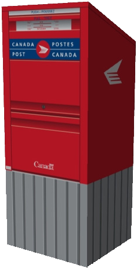

Concurrency is the composition of independently executing 'processes'.
Parallelism is the simultaneous execution of (possibly related) computations.
—Rob Pike, Concurrency is not Parallelism
Concurrency is about the way we structure programs.
Parallelism is about the way they run.
—Rob Pike, Concurrency is not Parallelism
Existing or occurring at the same time.
Computations must meet to coordinate.
If one is not available, the other must wait (synchronize).
Not existing or happening at the same time.
Computations do not need to meet to coordinate.
If one is not available, the other does not need to wait.
An operation is
while waiting for an event
